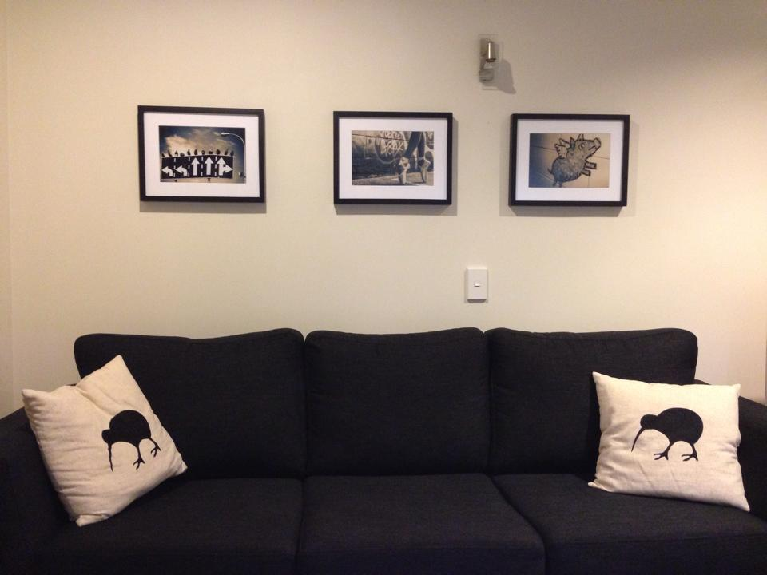

How does life look through the 'pleasure, passion and purpose' lens?
I'm assuming the question pertains to my own life, not life in general, in which case - huh this is a very personal question!
- I have definitely been guilty of chasing after Pleasure. Because of its highly unsustainability characteristic, I have felt like it isn't enough. I've often wondered, what about the inbetweens?
- Flow is what I like about programming: it feels easy to get in a state of flow, it feels satisfying, and time flies like crazy. It's also quite draining, but I guess I like that too about it. Funnily enough I would not have associated the word Passion to programming, maybe because you can get paid for it? Maybe because as a child and a teenage, art and music were the things people around me were passionate about?
- Although Higher purpose is definitely present in my life, I don't feel I have spent much time cultivating it.
From the 'discovering values and higher purpose' exercise: What are your core values? What do you stand for?
- Honesty, Independance and Uniqueness: being true to yourself, not trying to fit the mold, the right for everyone to be happy (regardless of their difference or uniqueness)
- Adventurousness: challenging yourself, being out of your comfort zone, living a live of adventure
- Effort and Determination: being a fighter, trying hard, working hard
How did you find the resilience ideas and meditation exercise?
My thoughts about the different levels of resilience:
- I feel skeptical about the relationship between inner calm and happiness.
- Depending on our experiences in life, I feel we can be emotionally resilient in some areas, but less so in a different one. If you have faced many failures in an area, your sense of self-efficacy decreases and you fear failure more strongly, making it harder to let go.
- The explanation about cognitive resilience got me confused: I think you can have a strong locus of control, and feel that you can overcome obstacles in the future, while still beating yourself up for your past failures, thinking that they are due to your own inadequaties.
I found it quite easy to remember experiences of successes and failures, and the feelings that went with them. Letting go? Not that easy no...
Any other musings?
My living room, with the motivational poster I put together after having read Drive from Pink. From left to right: Autonomy, Mastery, and Purpose. 